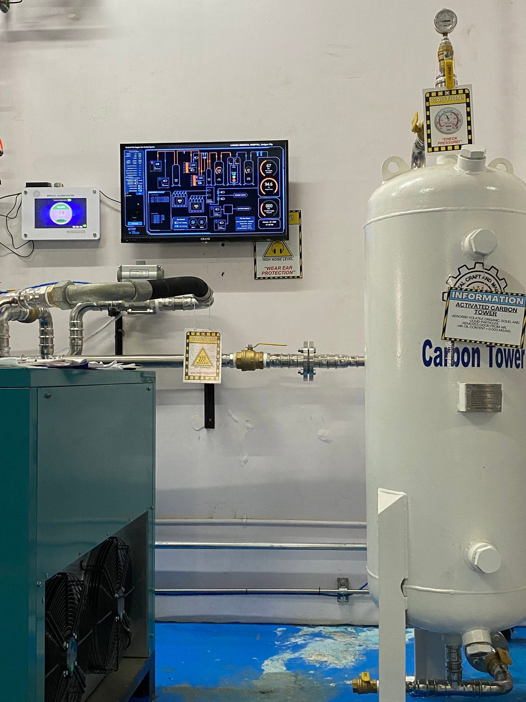
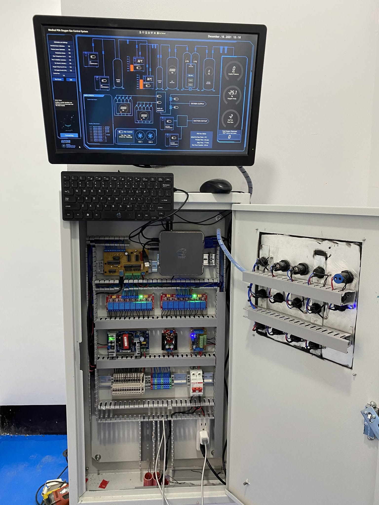
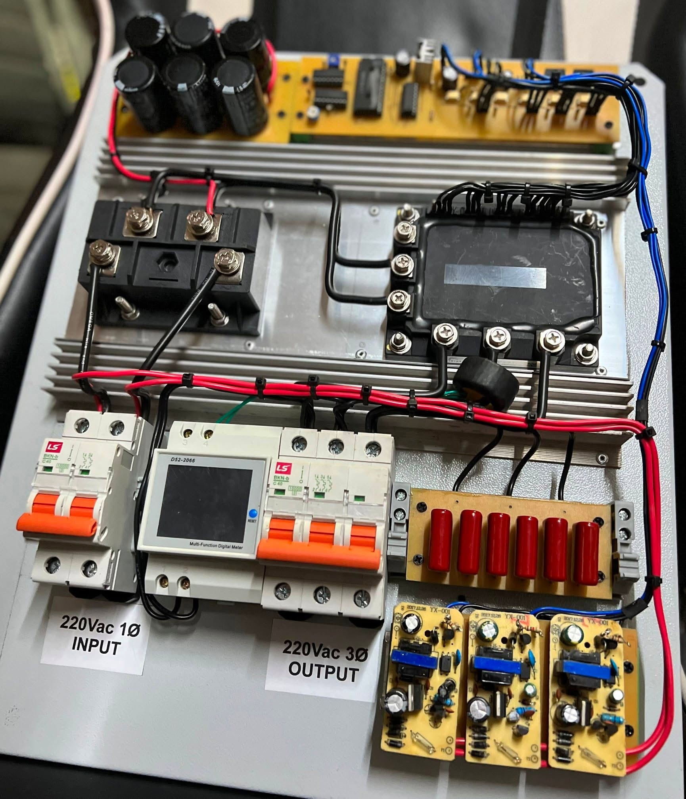
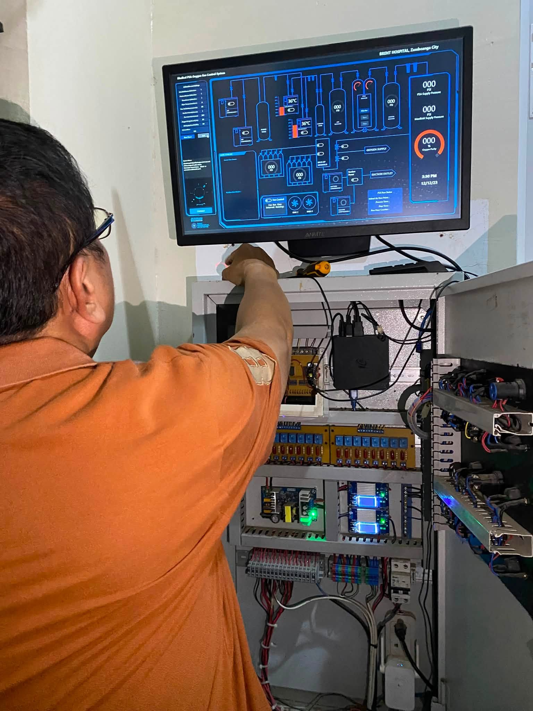
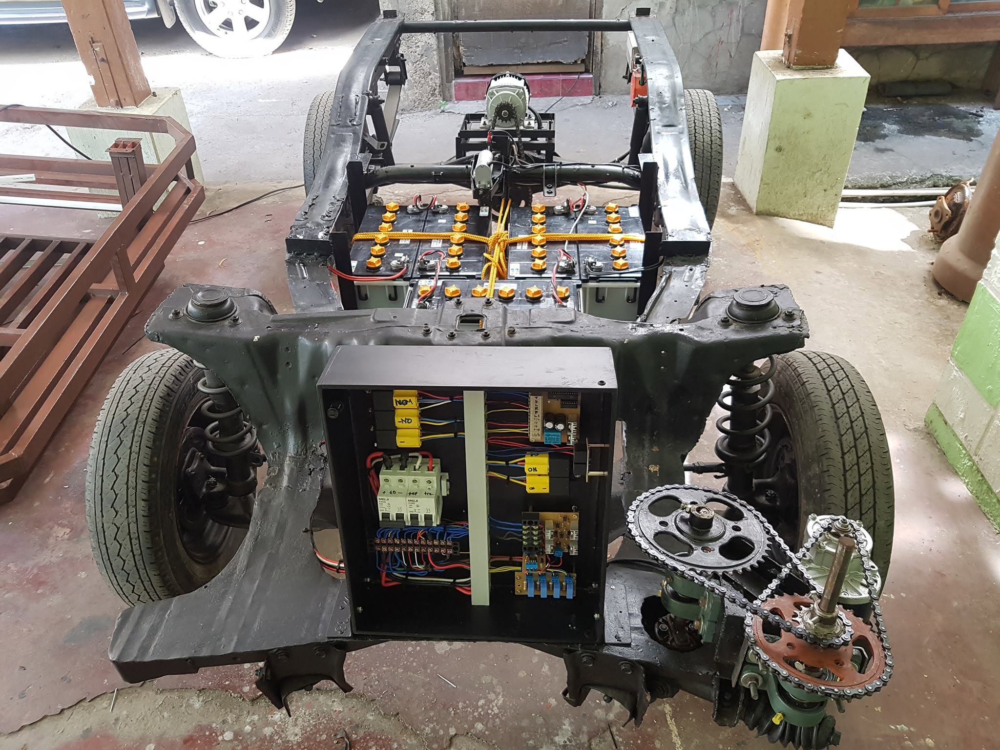
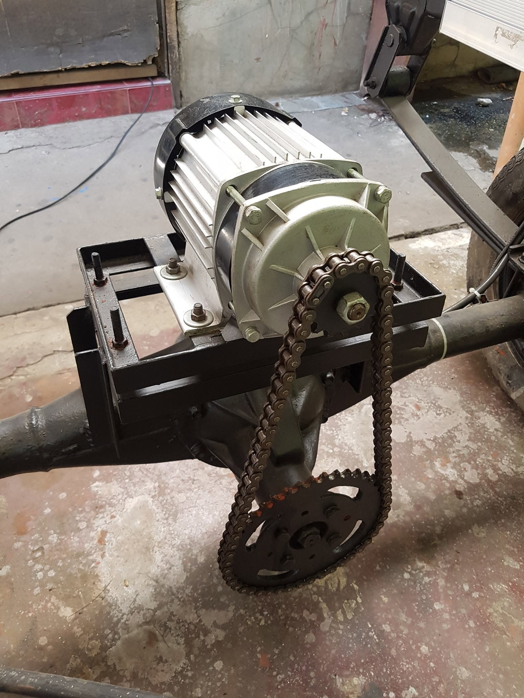

IoT Automation
Machines and sensors connected, so you can see and control them from anywhere.
Electronics, designed and built in Cebu since 1987.
It started in 1987 with a workbench and a soldering iron.
Then came the taxi meter: one small box, trusted to get the fare right on every trip.
Today our systems run oxygen plants for hospitals.
They watch pressure, purity and flow around the clock.
Everything Titan makes is designed and built by Jerome Sy Diango and the team he trained.

Machines and sensors connected, so you can see and control them from anywhere.

Controllers that keep equipment running to the settings you choose.

Panels, drives and boards wired into one working system.

Software written for the machine in front of us.
The workbench is still busy. The latest side project is an electric vehicle.

